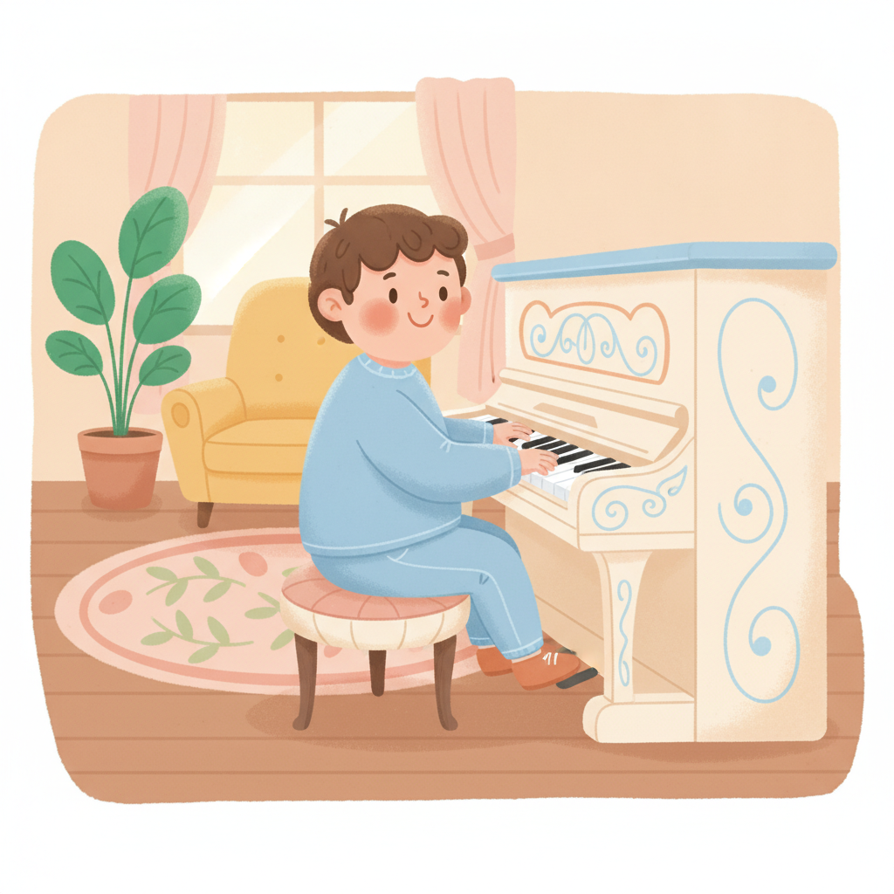
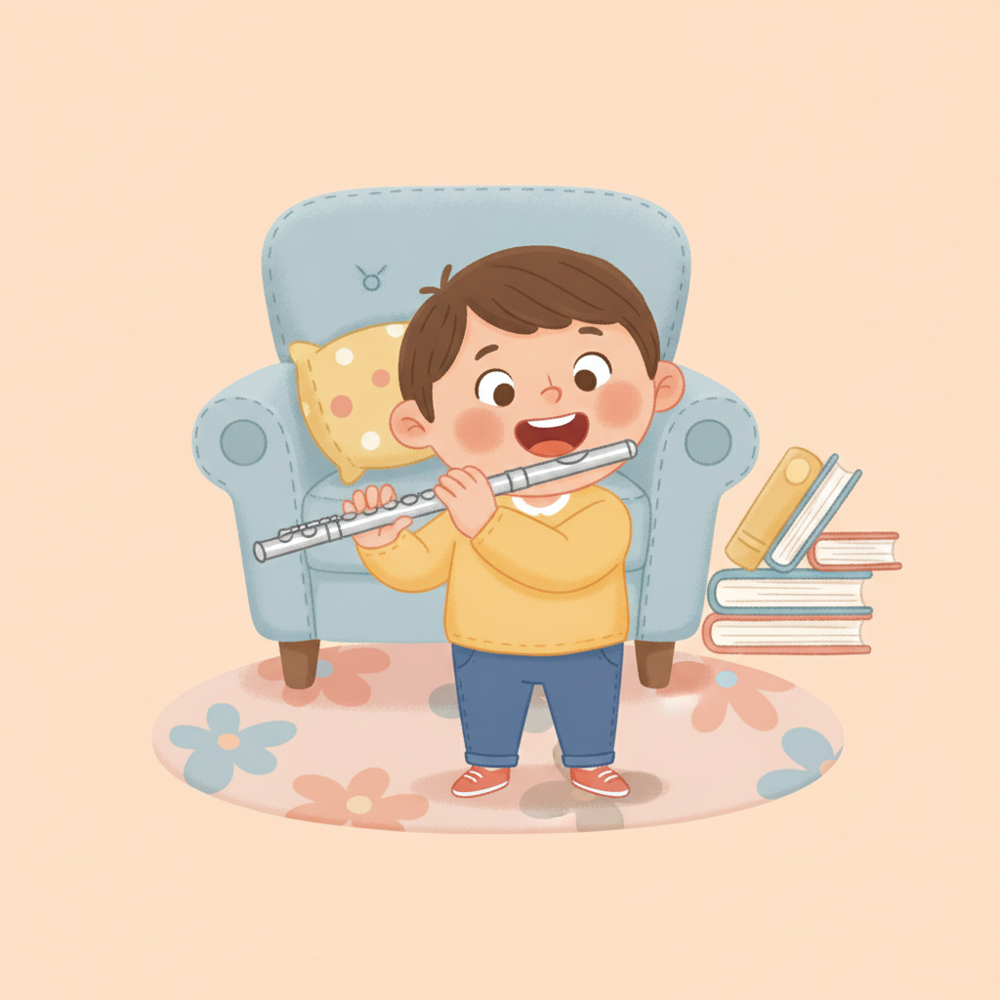

怎麼幫孩子挑第一個樂器？鋼琴與長笛的特性比較
孩子想學音樂，第一個樂器到底要選鋼琴還是長笛？先別急著替他決定。我們從孩子本身慢慢看。

幾乎每隔一陣子，就有家長帶著同一個問題來找我：「老師，孩子想學音樂，第一個樂器先學鋼琴好，還是長笛好？」問得很認真，也常常有點焦慮，好像選錯了這一步，後面就全毀了。我懂那種心情。但我每次都會先請他們深呼吸一下——這題沒有標準答案。重點從來不是哪個樂器比較厲害，而是哪個適合你眼前這個孩子。
沒有「最好」的樂器，只有「最適合」的
很多人心裡都有一句沒說出口的預設：「學音樂嘛，總要先學鋼琴吧？」這句話流傳得太廣，廣到大家都忘了問為什麼。鋼琴當然很好，但它不是唯一的起點。我教過的孩子裡，有人坐在鋼琴前如魚得水，也有人吹出第一個長笛音時，眼睛整個亮起來。差別不在樂器。在這個孩子是誰。一個再厲害的樂器，如果孩子每次練習都像打仗，學沒幾個月就放掉了，那再好也是白搭。能讓他願意一直練下去的，才是對的。選得適合，才走得久。
鋼琴：看得見的音樂地圖
鋼琴最迷人的地方，是它把音高排成了一條看得見的線。低音在左、高音在右，一顆一顆整整齊齊攤在眼前，孩子按下去就有聲音，不必先學怎麼發聲、怎麼控制氣。即看即彈。這種「直接」對小小孩特別友善，也讓它替樂理和音感打底特別好用——音與音之間的高低關係，孩子用眼睛就能看懂。再加上雙手要各自做不同的事，左右腦都被溫柔地動員起來。當然它也有現實面：你家得放得下一台琴。這點，得先想清楚。

長笛：輕巧好攜帶，入門講究氣息
長笛走的是完全不同的路。它輕、它小，往書包一塞就能帶去學校、帶去社團，練習地點的彈性比鋼琴大得多。它是一件旋律樂器，一次唱一條線，那種把旋律吹得圓潤好聽的成就感，很迷人。不過它的入門門檻，藏在你看不到的地方——氣息。要讓長笛發出穩定的聲音，得靠一點肺活量和吹奏控制，這對太小的孩子確實吃力。我通常會建議等孩子換完牙、大約八歲以上再開始，門牙和肺活量都成熟一些，學起來會順很多。早一點不是不行。只是會比較辛苦。
怎麼從孩子身上找答案
講了這麼多樂器，其實答案不在樂器身上，在孩子身上。先看年齡和體格——太小的手按不滿鋼琴，太小的肺撐不起長笛，這是身體的事，急不來。再看個性：他能安安靜靜坐住，還是一刻都閒不下來、渾身是電？坐得住的，鋼琴那種沉下心的練法他比較受得了；好動的，長笛能站著吹、能帶著走，或許更合拍。然後看你家的空間，放不放得下一台琴，這很實際。最後，也是我最愛問家長的——你的孩子平常都被什麼聲音吸引？孩子的耳朵，常常比我們更早知道答案。

先從一堂體驗課開始
說到底，與其在家裡翻來覆去地比較、糾結，不如讓孩子真的去碰一下。看再多分析，都比不上他親手按下第一個琴鍵、吹出第一個笛音時的那個表情。那個反應，騙不了人。我都跟家長說，先讓孩子各試一堂體驗課，你在旁邊看著就好——看他坐不坐得住、看他眼睛有沒有亮、看他課後還想不想再碰。答案往往就在那裡了。選樂器，真的不必一個人在家想破頭。讓孩子先試試看。剩下的，我陪你們一起看。
快速重點
- 沒有最好的樂器，只有最適合這個孩子的，能學得久的才是對的。
- 鋼琴音高看得見、即看即彈，打底很好，但要有空間放一台琴。
- 長笛輕巧好帶、是旋律樂器，建議換牙後、約八歲以上再開始。
- 從孩子的年齡、個性、空間和他被吸引的聲音去找答案。